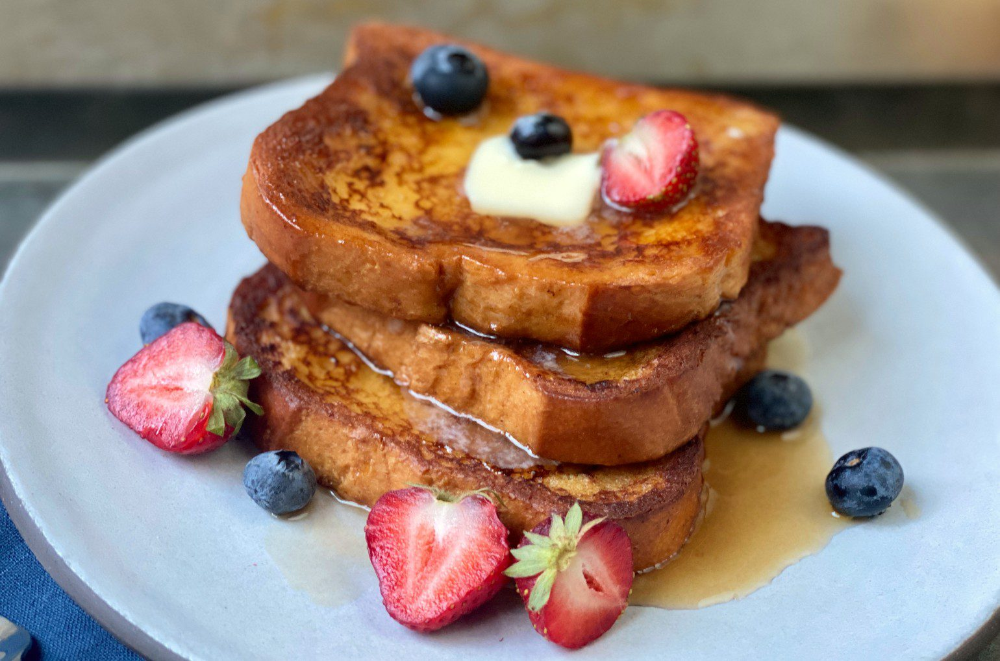

French Toast
Home Page

French Toast Recipe
Quick and easy french toast recipe perfect for any morning and only requiring a few staple ingredients that are likely already in your kitchen!
Ingredients
- 6 slices white bread
- 2 eggs
- 2/3 cup milk
- Dash of cinnamon
- 1 tsp vanilla extract
- Salt to taste
- 1/4 cup sugar
Instructions
- Mix egg, milk, vanilla, cinnamon, sugar and salt with a wire whisk in a bowl
- Dip bread in egg mixture, turning to coat both sides evenly
- Cook break slices on a lightly greased nonstock grittle or pan on both sides until lightly browned
- Serve with maple syrup and top with berries if desired